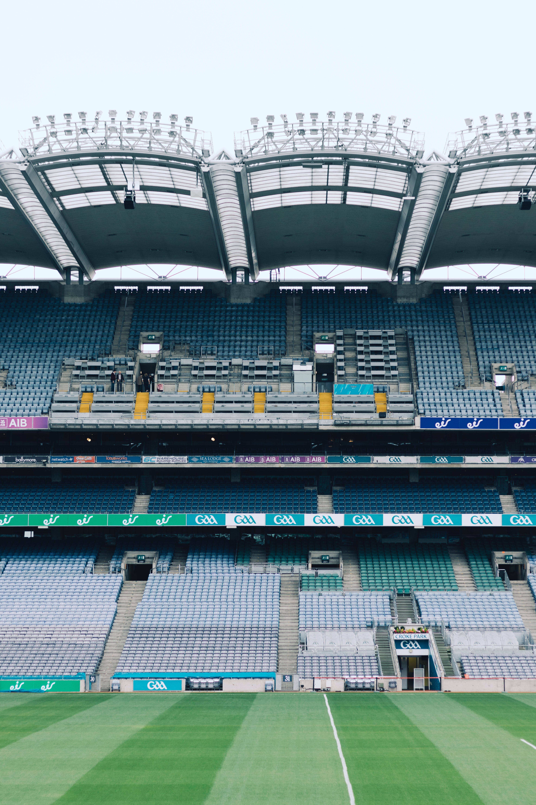

History
Founded in 1884, the Gaelic Athletic Association (GAA) was created to revitalise those Irish national pastimes – such as hurling – that were in danger of dying out. The resurgence of traditional Irish sports that followed contributed deeply to a broader sense of Irish nationalism growing within the country, which at the time was still part of the United Kingdom. The GAA had seven founding members, but the driving force behind its establishment was Michael Cusack. An Irish teacher from close to The Burren in County Clare, Cusack was what is called a ‘romantic nationalist.’ He was active in the fight of the Gaelic revival to preserve the Irish language and deplored the decline of Irish customs and games that had accompanied British occupation. In an attempt to remedy this situation, Cusack met with six other like-minded men in a hotel in Thurles, County Tipperary, on November 1, 1884. Together they founded the Gaelic Athletic Association for the Cultivation and Preservation of National Pastimes – a title later shortened to the Gaelic Athletic Association (GAA).